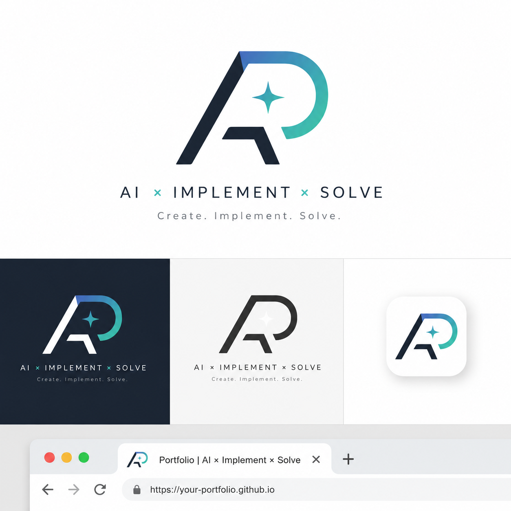

隠れ家カフェをイメージしたインスタバナー広告。

私のサービスのメインテーマである「AI × 実装 × 問題解決」をベースに、 AI / Architecture / Automation から"A" Problem Solving / Product / Portfolio から"P" という2文字を採用。 今後もテーマをブレさせず活動していくという決意を込めてロゴを作成。
イラレを使用してベクター形式で作成。
左側の鋭い斜線で実行や加速などを表現。
右側の円弧部分で発想や創造性、AIによる拡張性などを表現。
中央の星は爆発をイメージ、アイデアの発火点として、AIを活用していくという意味合い。
配色はネイビーからブルーグリーンへのグラデーションにし、
信頼感やエンジニア感とAIや発想のイメージを流動性を持たせてつなげるイメージで作成。
また、ファビコンとしても使用予定のため、ミニマルにデザイン
自サービスのロゴを作成するにあたり、テーマ等を深く考え直せた。
ロゴを作成するための構成要素、どんな意図を込めたいかなどを事前に整理することの大切さを学べた。